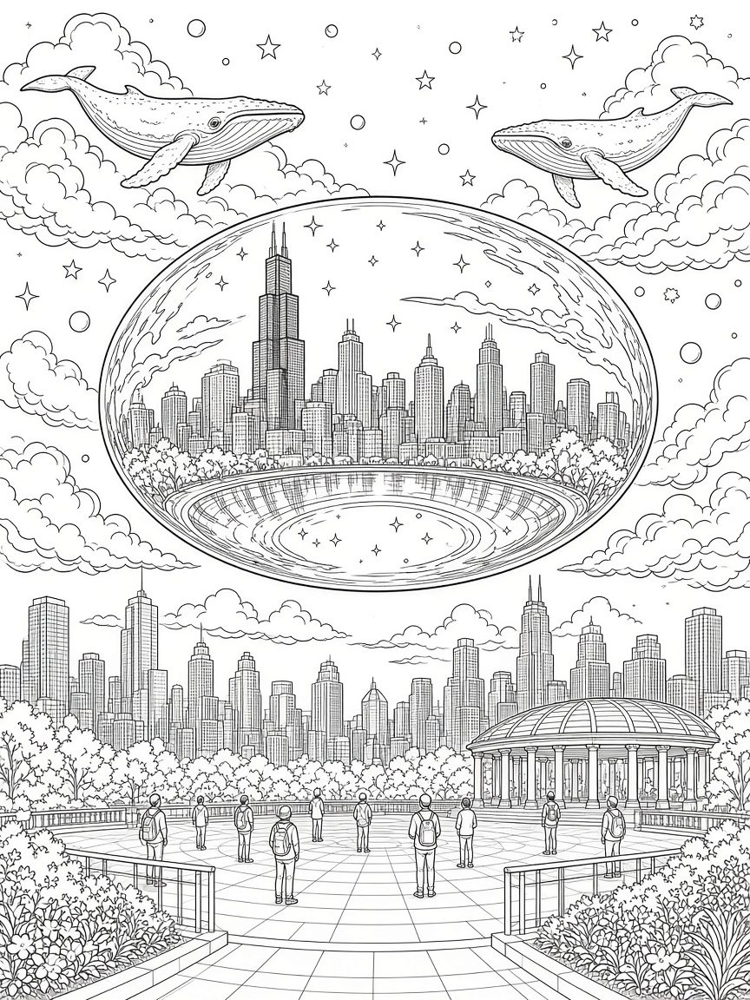
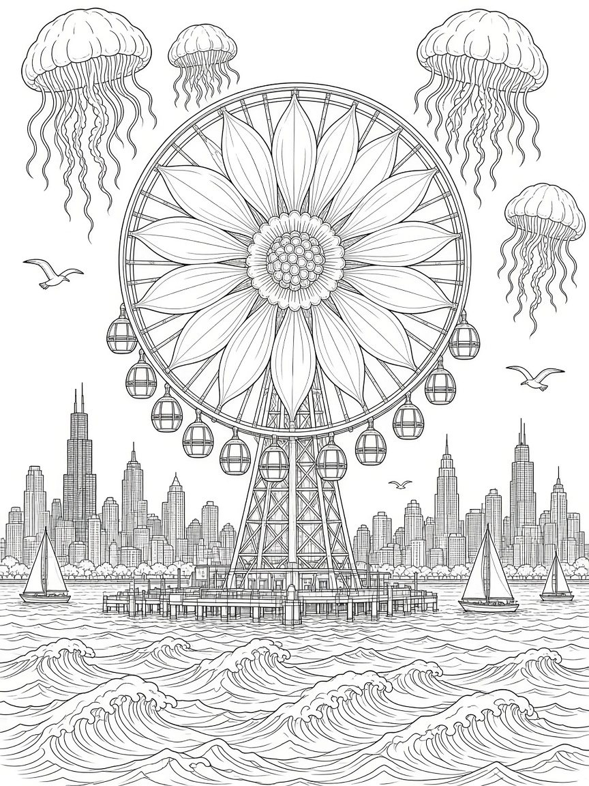
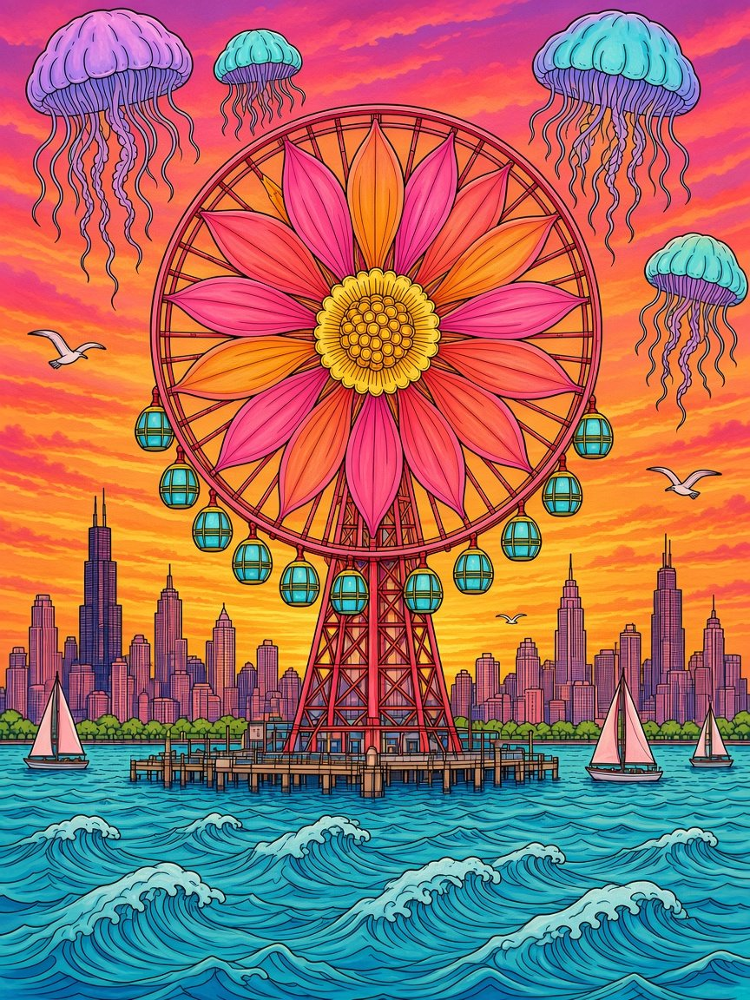

Support 312 History ★
WHERECHICAGODREAMS★
A surreal coloring journey through the Windy City. Inside, the Bean floats as a mirror planet with whales in the sky, the L races up into the clouds, and a Ferris wheel blooms over the lake.
- 50 original surreal Chicago designs
- 8.5 × 11 in large format, 106 pages
- Single-sided pages, so markers won’t bleed
- Color test page included · for adults & teens
By Ariana Cholponkadyrova, creator of 312 History. Every copy supports new fact-checked stories.
Peek inside
COLOR IT YOURSELF
Hover or tap a page to see it in color.


